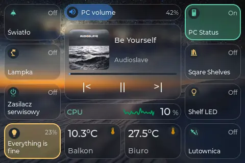
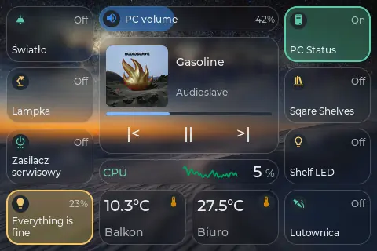
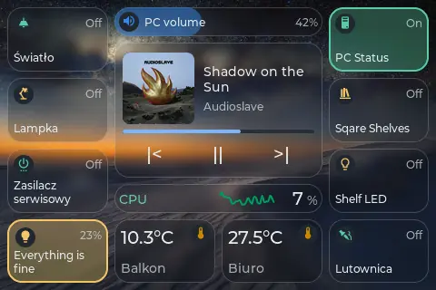
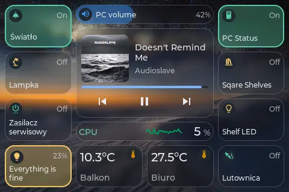
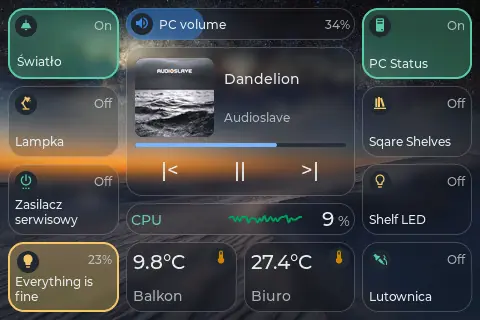
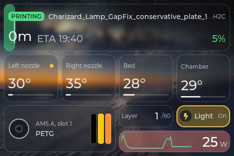
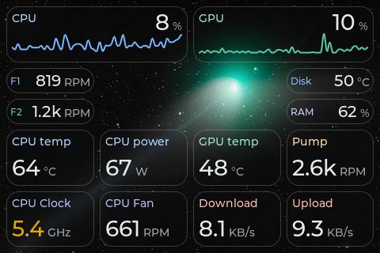
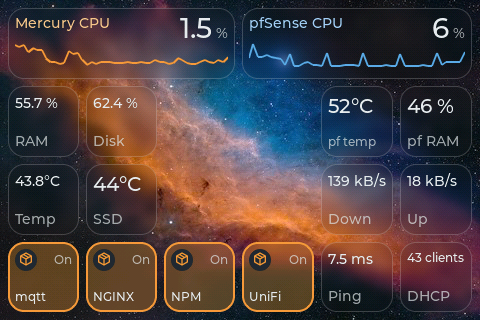

Flash TouchDeck to your Guition 3.5" deck straight from your browser.
A touch control deck for Home Assistant, live PC stats from the TouchDeck Companion and Bambu Lab printers, set up from a web portal on the device. No cloud, no accounts.
On the device
Recorded frame by frame from the display. Pick an animation set under Display > Animations.

Calm: a ripple on touch, a glow when a tile turns on, pages crossfade, cards grow out of their tile.

Water: drop rings, the on colour floods out of your finger, a water edge between pages.

Glass: a highlight under your finger, a glossy sheen, pages slide in depth, cards rise like a glass sheet.

Heavy: the tile bends like water, aurora colours, pages change column by column.

Photo frame: when idle, the tiles step aside for full screen pictures and a clock.

Bambu Lab printer: heating glow, a turning spool and a filament change.

PC stats from the TouchDeck Companion: charts, temperatures, power and fans.

Home lab: Proxmox and pfSense readings from Home Assistant.
00
Before you start
Desktop Chrome or Edge. Web Serial does not run on Firefox, Safari or mobile.
A real data USB-C cable. A power-only cable will not expose a serial port.
Guition JC3248W535 only. This firmware is for the ESP32-S3 N16R8 board. Find the printed case on MakerWorld.
Stuck in a connect / disconnect loop? Hold BOOT, plug in USB while holding, then release. Or hold BOOT, tap RESET, then release both.
Close anything that holds the serial port. The TouchDeck Companion talks to the deck over the USB cable when plugged in. Close it, Arduino IDE, PlatformIO Monitor and the serial monitor below before flashing.
Updating a deck that already runs TouchDeck? Use the OTA file instead to keep your pages: download TouchDeck-<version>-ota.bin from Releases and upload it in the deck's portal under Maintenance > Firmware update. Back up the configuration first under Maintenance > Backup.
01
Flash your deck
One board, ready to go: 16 MB flash, 8 MB PSRAM and a 3.5" IPS QSPI panel with capacitive touch.
A dialog will ask which serial port to use. Pick the one that appears when you plug in the deck. Choosing Erase device on a fresh install wipes everything stored on the deck. The full image is flashed at 0x0 and takes about a minute (around 2.7 MB).
02
Connect to WiFi
Right after flashing, send your WiFi credentials over USB in this tab. If you miss that window, join the deck's setup hotspot from your phone or laptop.
recommended
Configure WiFi in this tab
The installer offers Configure WiFi using Improv Serial on a freshly flashed deck with no WiFi stored, for about 3 minutes.
Wait for Installation complete and keep the install dialog open.
Pick your WiFi network, enter its password and click Connect.
The deck reboots onto your WiFi and shows its IP address. Note it down for the next steps.
fallback
Or join the setup hotspot
Scan the QR code shown on the screen or join the hotspot by hand.
In the portal, open Pages & tiles. Enter your Home Assistant address (for example http://192.168.0.7:8123) and a long-lived access token from your HA profile's Security tab. The token stays on the device.
Install the icon font from the portal: Material Design Icons, the set Home Assistant uses.
Click Update from HA to cache the entity list. Add tiles from the entity picker, then place them in the grid editor. Arrange landscape and portrait separately.
Optionally, open Advanced for Bambu Lab printers (LAN or through the Home Assistant Bambu Lab integration) and MQTT discovery.
In the deck portal, use + Add PC metric to add your sensors.
For PC control, click Pair for control on the companion's Device page, then tap Allow on the deck.
Metrics travel over UDP 4210, signed PC commands over UDP 4211, and cover art over TCP 8751. Allow the companion through the firewall. PC and deck must share a subnet. See PC stats and control.
05
View serial logs
Capture a boot loop, a WiFi error or a crash for a bug report. Plug the deck in over USB, click Connect and pick the same serial port you would use for flashing.
Only one program can hold the serial port at a time. The companion holds it while the USB cable is connected, so close it and any PlatformIO / Arduino monitors first. Disconnect this monitor before installing. Baud rate: 115200.